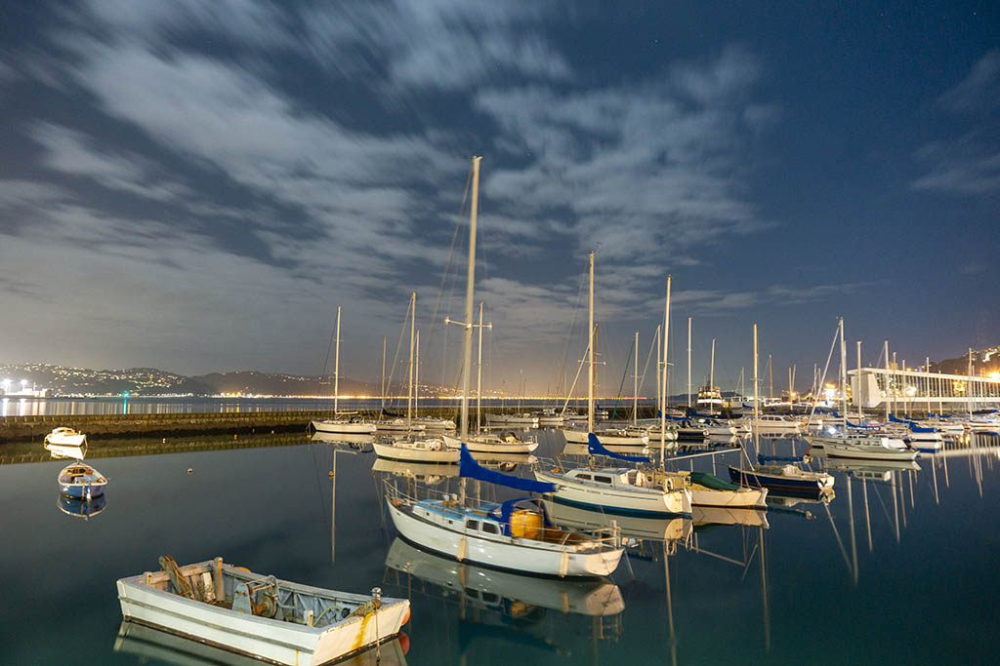
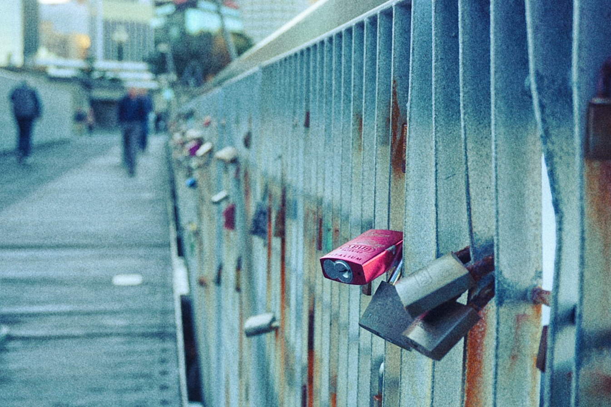
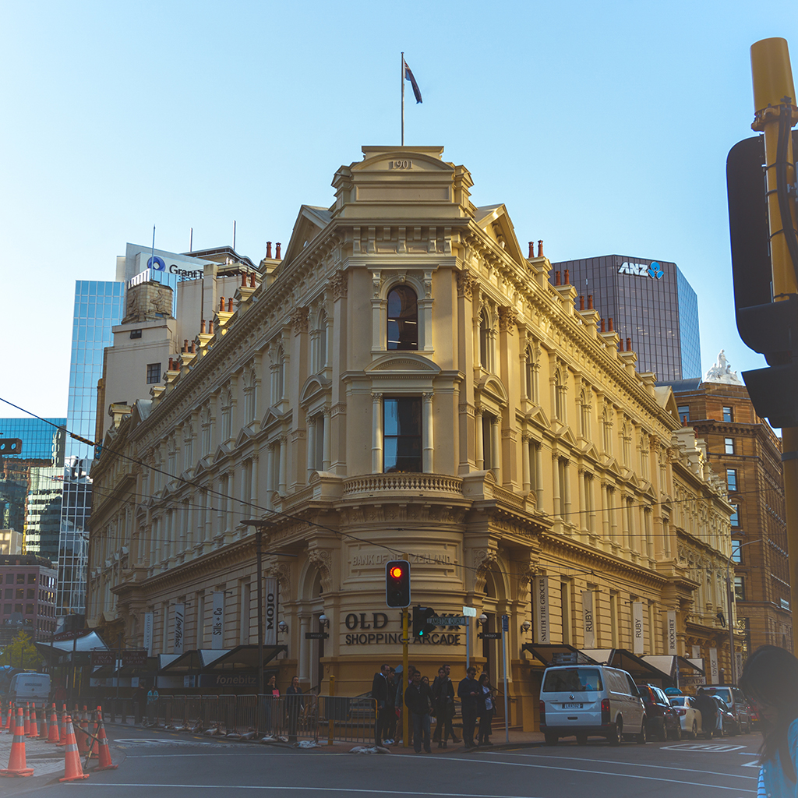

Wellington is the capital city of New Zealand. Surrounded by nature and fuelled by creative energy, Wellington is a compact city with a powerful mix of culture, history, nature and cuisine. Fuel your visit with strong coffee and world-class craft beer – Wellingtonians are masters of casual dining, with plenty of great restaurants, night markets and food trucks.
Things to do
Relax at Oriental Bay, Wellington’s golden-sand inner-city beach and delve into the many museums, art galleries and theatre shows that make up the city’s pulsing cultural scene. If you’re into the outdoors, Wellington has action-packed adventure activities like mountain biking and sea-water kayaking, as well as beautiful walks around the harbour and surrounding hills. Try the visually stunning Makara Peak track, as well as the City to Sea walk where you can experience the best of Wellington's waterfront. Ride the cable car up the hill to Kelburn for amazing views over the city and enjoy an ice cream at the top. On the waterfront itself you’ll find New Zealand’s national museum. Te Papa, as it’s colloquially known, means ‘our place’ and is one of the best interactive museums in the world.
Close to Wellington
If you want to visit the South Island, Wellington is the city is the place to board the inter-island ferry with or without a car.
This 3 and a half hour ferry ride offers daily services and is one of the most spectacular in the world.
Bluebridge(opens in new window) and the Interislander(opens in new window) both run regular sailings between the islands and Bluebridge also offers an overnight sleeper(opens in new window) service.
Leaving regularly from Wellington, the ferry takes passengers past the magnificent scenery of the Marlborough Sounds, before berthing in the picturesque town of Picton at the top of the South Island - the journey also runs from Picton to Wellington.
 Contact me
Contact me